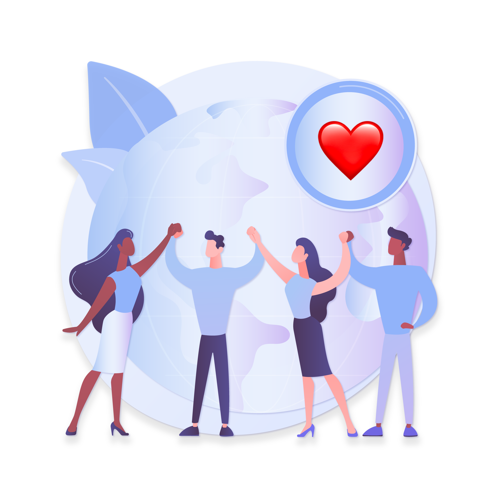

Le VIH/sida est une préoccupation majeure pour les jeunes. Ils sont à un risque accru de contracter le virus en raison de leur manque de connaissances et de leur tendance à prendre des risques. Nous offrons des informations sur le VIH/sida, des conseils de prévention et des ressources supplémentaires. Visitez ce site pour obtenir des informations à jour et apprendre comment vous protéger.
"Nous sommes toujours les premiers à payer le prix de l'ignorance et de l'inaction face au VIH et au SIDA. Ne laissons pas nos vies être définies par cette pandémie. L'espoir repose avec nous, les jeunes."
